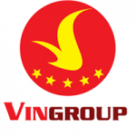
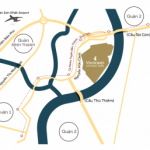

Tọa lạc tại khu Tân Cảng, Q. Bình Thạnh, khu đô thị Vinhomes Central Park có mặt tiền trải dài theo bờ sông Sài Gòn, vị trí được xem là rất đắc địa tại trung tâm TP HCM, thuận lợi cả về đường bộ, đường sắt và đường thủy.
Khu đô thị Vinhomes Central Park có tổng vốn đầu tư khoảng 30.000 tỷ đồng do công ty CP đầu tư xây dựng Tân Liên Phát thuộc tập đoàn Vingroup làm chủ đầu tư.
Quy mô dự án: 43,91 ha.
Mật độ xây dựng toàn khu: ~16%
Diện tích công viên cây xanh: 13,8ha.
Các phân khu chính:
Là tập đoàn Vingroup, một trong những Tập đoàn kinh tế tư nhân hàng đầu Việt Nam với các thương hiệu được đánh giá có quy mô và uy tín lớn nhất Việt Nam như: Vinhomes, Vinpearl, Vinmec, Vincom, Vinschool, Vinecom, Vincharm,…
Dễ dàng kết nối đến mọi khu vực quan trọng trong thành phố: 2 phút đến ga Metro số 1, tuyến Metro số 1 Bến Thành – Suối Tiên, 4 phút vào trung tâm Quận 1, 3 phút đến khu đô thị mới Thủ Thiêm trong tương lai.
Công viên 14ha ven sông Sài Gòn với chiều dài hơn 1km mặt sông, nơi đây sẽ là một lá phổi xanh sinh thái không chỉ dành riêng cho cư dân mà còn là chung cho cả thành phố. Trong tương lai gần, Vinhomes Central Park – Tân Cảng sẽ trở thành biểu tượng của TP. Hồ Chí Minh.

Tiện ích 5 sao vượt trội, đầy đủ tiện ích trong khu phức hợp liên hoàn và biệt lập như trường học tiêu chuẩn quốc tế Vinschool, bệnh viện đa khoa quốc tế Vinmec, tòa nhà văn phòng phức hợp khách sạn 5 sao 81 tầng cao nhất Việt Nam, Trung tâm thương mại Vinc om 5900m2…

Các trang thiết bị tân tiến cùng đội ngũ nhân viên an ninh chuyên nghiệp bảo đảm giờ trực luôn 24/7
Đội ngũ tuần tra Khu đô thị kết hợp với những chốt gác trên những con đường

Với vị trí đắc địa, cùng với tuyến metro số 1 đang ngày đêm thi công, khi đưa vào vận hành giá sẽ gia tăng “chóng mặt” trong vòng 3 năm.
Cam kết cho thuê từ trị giá 8% giá trị căn hộ/ năm từ chủ đầu tư Vingroup.

Bộ phận tư vấn – 0968.11.66.22
hoặc đăng ký nhận ngay bảng giá và thông tin cập nhật tại đây.
sendđăng ký ngay
Chị Trương Thị Bích Phương, người mua 2 căn hộ tại Vinhomes Central Park và may mắn trúng giải nhì trong lần này, bày tỏ cảm xúc trào dâng: “Rất cảm ơn Tập đoàn Vingroup, nhờ đó mà Việt Nam có những dự án không kém gì Singapore, Bangkok, hay các nước châu Âu và Mỹ”.
Chị cho biết thêm: “Phải nói thực, Tập đoàn Vingroup đã dành tất cả tâm huyết để đem những cái đẹp nhất, hiện đại nhất trên thế giới về cho người Việt Nam hưởng thụ. Có biệt thự ở Đà Nẵng, nhưng chính tôi quyết định mua 2 căn hộ ở đây vì cho rằng mình cũng có tuổi, con trai hay đi nước ngoài, cần một nơi sống tiện nghi gần bệnh viện cho mình và trường học để chăm cháu”.

Đây là căn hộ đầu tiên mà bà Ngọc Nga chọn cho con gái của mình nên bà Nga quan tâm đến không chỉ chất lượng nhà ở mà còn vừa ý với môi trường sống xanh, tiện ích cao cấp và các giá trị xã hội đính kèm. Sau khi tham khảo nhiều nơi, bà Nga rất hài lòng với Vinhomes Central Park, nơi có “nhiều chương trình hoạt động bổ ích tạo điều kiện cho cộng đồng cư dân giao lưu và làm quen với nhau, cùng sự đa dạng của các CLB Văn-Thể-Mỹ”…

Bà Trần Thị Thanh Tâm đại diện BXD&PTCĐ của tòa Central 3 lên chia sẻ cảm nghĩ. Từng tham gia hành trình “Trải nghiệm giá trị sống cùng Vinhomes”, bà Tâm rất thích cộng đồng cư dân thân thiện và hòa đồng nơi đây. Chính vì vậy, bà muốn đóng góp xây dựng một cộng đồng ngày một văn minh và gắn kết hơn. Bà Tâm cho biết, bà bị thuyết phục và đặt mua căn hộ ngay từ lần đầu tiên khi biết thông tin về Vinhomes Central Park và những giá trị cộng đồng đi kèm.